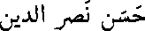

essayez...
tapez l'un de ses mots:
adaptation, hassan, liban, homme
MOT :
scientifique
normal
Page maintenue par
Hassan Nasreddine

nasreddi@email.enst.fr
Pour savoir plus sur le Glossaire évolutif en ligne